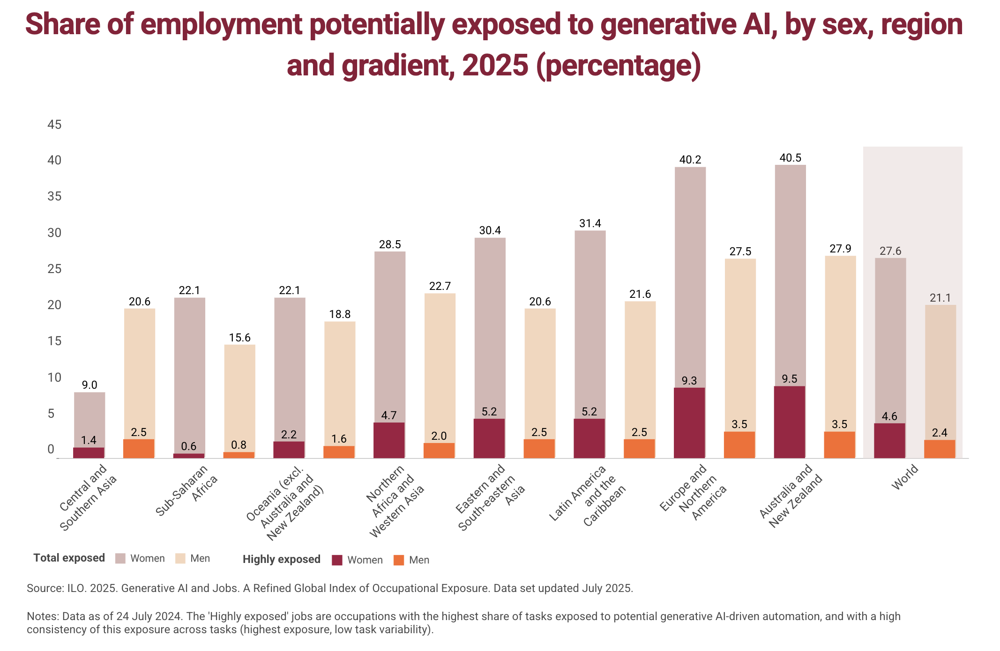
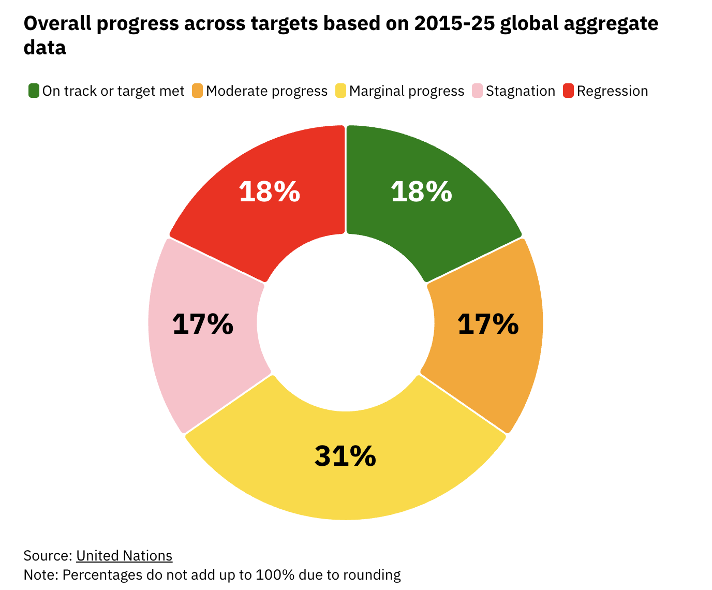

Chapter 4 Future
What will happen if it goes like this for the SDG 1,8 and SDG as a whole?
4.1 Poverty SDG: What Happens If This Continues
The projection is straightforward. If current trends hold, 8.9 percent of the world’s population will still live in extreme poverty in 2030 (UN 2025a). The target was zero. The gap is enormous. And sub-Saharan Africa will bear the largest share of that failure, as it already does today.
Climate change makes this worse in a very specific way. The people already living in poverty are the most exposed to floods, droughts, crop failures, and displacement. Each climate shock pushes millions closer to or deeper into extreme poverty. People with the least land, the least savings, the least infrastructure, and the least political voice have the least capacity to absorb these shocks (World Bank 2024a). Climate adaptation is not a separate agenda from SDG 1. It is poverty policy.
What must change? Four things stand out as non-negotiable.
First, social protection floors in low-income countries must be properly funded, which requires a genuine commitment of $1.4 trillion annually above current spending levels (UN DESA 2025).
Second, the sovereign debt burden choking developing economies must be restructured so that governments can invest in their own people instead of sending money out the door to creditors.
Third, inclusive economic growth, not just aggregate GDP growth, must become the actual benchmark of success. If working poverty prevails, we are never coming out of the poverty cycle.
Fourth, legal infrastructure must be built so that the 1.4 billion adults excluded from formal land markets can access the financial system and begin accumulating economic security (UN 2025a).
Without these, 2030 will pass, a new set of goals will be announced, and the same conversation will happen again.
4.2 Economic Growth SDG: What Happens If This Continues
If current trajectories hold, SDG 8 faces a future shaped by three compounding crises. The first is AI-driven labor market transformation, which disproportionately displaces women and lower-skill workers faster than training and social protection systems can respond (UN Women 2025). The second is the continued dominance of informal employment in the Global South, where hundreds of millions of workers are technically employed but practically unprotected (ILO 2025). The third is a global financing architecture that routes cheap capital to rich countries and extracts debt payments from poor ones, making the investment needed for decent work fundamentally inaccessible in the places that need it most (Sachs et al. 2025).

The green transition creates a genuine opportunity here if governments seize it deliberately. Renewable energy industries are labor-intensive. Green infrastructure creates jobs. Retrofitting buildings for energy efficiency generates employment locally in every country. But the green transition also destroys jobs in fossil fuel industries, often in communities with no economic alternatives. Just transition policies, including retraining programs, income support, and regional investment strategies, are as essential to SDG 8’s future as any employment statistic.
The technology question is also unavoidable. AI and automation will reshape labor markets on a timeline that outpaces current policy cycles. Countries that build the regulatory, educational, and social protection infrastructure now will manage this transition. Countries that do not will see inequality deepen, informality grow, and decent work become even more concentrated at the top (UN Women 2025).
On top of all these, we also have to think about the linkage between employment and poverty. Employment doesn’t mean econonic growth and it also doesn’t mean reduction of poverty, although it is intuitive. We need to make sure that employment is in a structured process for poverty to reduce drastically.
4.3 The SDGs as a Whole: The Bigger Stakes
Ten years after the adoption of Agenda 2030, less than 20 percent of SDG targets are projected to be achieved by 2030. Zero of the 17 goals are on track globally (Sachs et al. 2025). This is a serious complication. However, there is more to it than just numbers.

The SDGs did not fail because the goals were wrong. They are failing because the financial and political systems of the world were never reformed to make them achievable. The global financial architecture just pushes money to rich countries. The international debt system extracts resources from poor ones and supplies them to the rich. Development assistance is declining precisely when the need is most needed. And geopolitical fragmentation is undermining the multilateral cooperation that the SDGs fundamentally require (Sachs et al. 2025).
There are six transformations that the 2025 UN SDG Report identifies as capable of unlocking progress across all 17 goals: food systems reform, energy access and sustainability, digital connectivity, education reform, jobs and social protection, and climate and biodiversity action (UN DESA 2025). These are not sectoral interventions. They are systemic pivots. Each one restructures incentives and resource flows across multiple goals simultaneously.
The SDGs will almost certainly not all be achieved by 2030. But they have done something that cannot be undone. They reshaped what governments measure. They changed what donors fund. They gave citizens a framework to hold institutions accountable. That is not failure. That is a foundation. The question is whether the next global framework will be built on that foundation or will it just go back to square one. The current world situation, US and Israel vs Iran, Russia vs Ukraine, Sudan Civil war, Myanmar Civil war, etc are pointing towards the second route unfortunately!